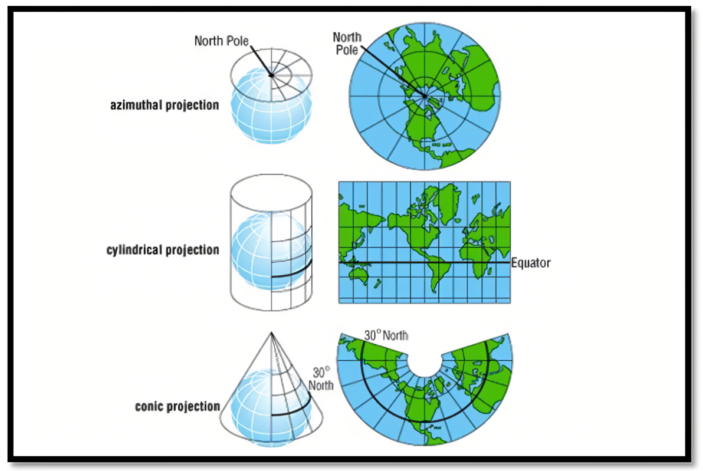
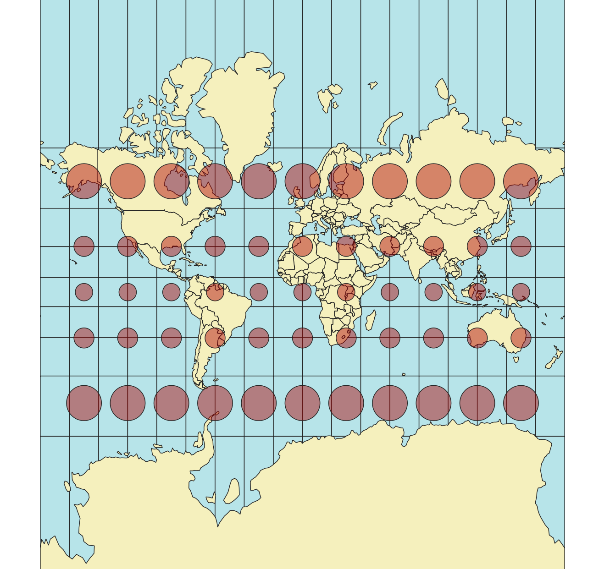
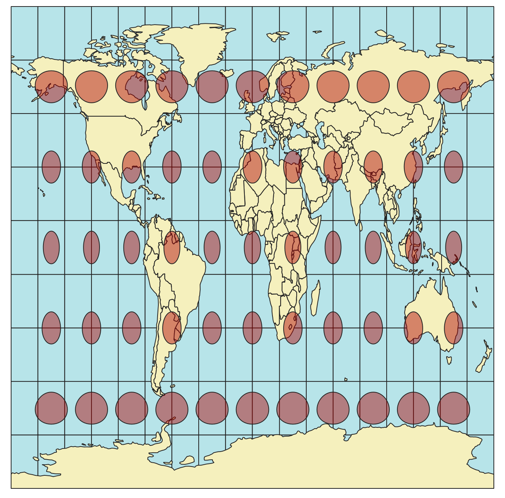
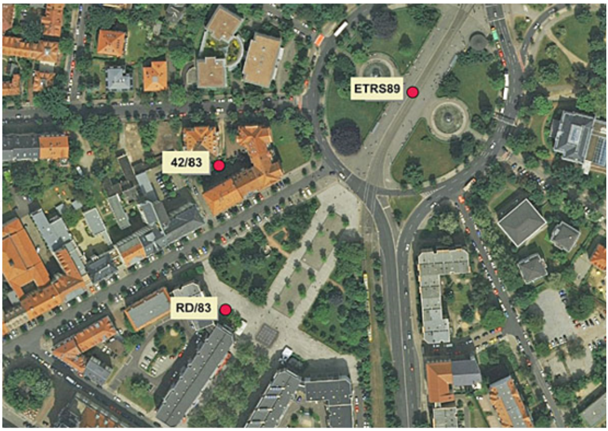
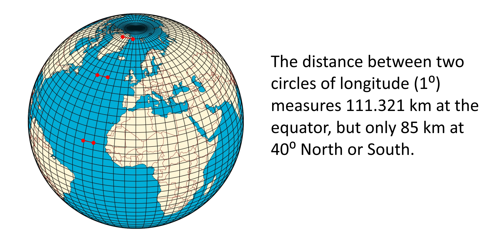

2.2. Projections#
2.2.1. Introduction#
An important issue when creating a map of a region, is that it is impossible to create a representation of a sphere on a 2D plane without distorting the map. The transformation of a 3D object onto a flat surface can be done with the help of a projection. Over the centuries, cartographers and mathematicians have developed a multitude of different methods to project the earth onto a flat surface. However, it is never possible to correctly represent the world on a flat surface (see the video above). Every projection distorts either the length between two points, the angles between two lines (directions), or the size of an area. A projection can only correctly represent one of these three dimensions. This means, that depending on the projection method, your world map will not represent the size, angles, or distances correctly.
{kind=link}

Fig. 2.15 Examples for Projections (Source:(http://ibis.colostate.edu/webcontent/NR505/2012_Projects/Team6/GISConcepts.html)#
Every projection has its use case. For example, the Mercator projection displays the angles between to points correctly. This was used extensively during the seafaring age without satellites, as ships could navigate to a destination by following a straight line on a map. For example, the Mercator projection displays road intersections correctly: a road that crosses another road at a right angle, will be displayed as such on a mercator projection. This is especially useful when navigating. The shape of an area remains correct, since the angles between each line stay true. However, if you increase the scale of the map, the size and distances get distorted dramatically (see figure below). Furthermore, the further away from the equator you get, the more distortion you get.
Note
The True Size of The mercator projection is famous for distorting the size of different countries. You can check the true size in comparison to different placements on the map on TheTrueSize.com website. A popular example is Greenland in comparison with Africa, which seem on the map to be about the same size, but in reality Africa is a lot bigger.

Fig. 2.16 Comparison Greenland - Africa. Source: The True Size of#
2.2.2. How to choose an appropriate projected coordinate system#
In GIS, we project the earth onto a flat coordinate system (hence the name coordinate reference system or CRS). It is crucial that you are aware that your data can be in one CRS and your QGIS project in another CRS.
The project CRS is displayed on the bottom right corner of the QGIS interface. Here, you can see the EPSG code. EPSG stands for European Petroleum Survey Group, and it refers to a standardized code system for coordinate reference systems (CRS) and projections. Each EPSG code (e.g., EPSG:4326 for WGS84) uniquely identifies a specific CRS, helping ensure consistency and interoperability in geospatial data across different platforms and applications.
EPSG Codes: These are numerical identifiers assigned by the EPSG database to specific coordinate reference systems, making them concise and unambiguous (e.g., EPSG:4326 for WGS84). They provide a standardized way to reference CRS across various GIS applications.
CRS Names: These are typically descriptive names for coordinate reference systems (e.g., “WGS 84” or “NAD83”). While names can provide insight into the system being used, they may not be unique or universally recognized, leading to potential confusion without the accompanying EPSG code.
To change the CRS of your data and project, follow the steps explained below. The default CRS/EPSG code of every QGIS project is the World Geodetic System 84 (EPSG: 4326). This CRS is optimized for world maps and therefore is not ideal for most humanitarian application, as we need region-specific projections, that provide the least distortion on the scale we wish to represent.
Tip
Choose the projection according to your area of interest. There are special CRS, that have been created to reduce the distortion and inaccuracy of projections for different regions on earth. You can find all the projections and their CRS codes on EPSG.io.
Look at the following images and pay attention how the different Coordinate Reference Systems change and distort the world map.
{kind=link}

Fig. 2.17 The Mercator Projection (EPSG:54004)#
Notice how the shape of the circle stays the same. Out of this, we can conclude that the angles stay the same. However, the circles get bigger the further away they are from the equator, and the distance between these circles change the further they they get from the equator. Therefore, we can conclude that the distances and sizes are being distorted with the mercator projection. The strength of the Mercator projection is that it conserves the angles between to lines. We can see this because the circles stay perfectly circular the further they are from the equator.

Fig. 2.18 The World Geodetic System 1984 (EPSG:4326)#
The WGS 84 is a CRS which consists of an ellipsoid, that resembles the shape of the earth closely. Instead of metrical units of measurements, it uses angular degrees (latitude and longitude). The shape of the Tissot circles is undistorted near the equator, but becomes elongated on the East-West axis the further it gets away from the equator. Unlike the Mercator projection, there is no distortion on the in the North-South direction. As the circles become distorted, we can deduce that the this CRS distorts the angles.
{kind=link}

Fig. 2.19 The World Equidistant Cylindrical Projection (EPSG:54002)#
The World Equidistant cylindrical CRS is equidistant (not distorting the length) along any meridian (cricles of longitude; North to South), and along the two standard parallels. The shape, scale and area distort the further they are away from the standard parallels.
This table shows an overview on which projections to use for which needed characteristic:
Characteristic |
Mercator (cylindrical) |
Lambert cylindrical |
Albers conic |
|---|---|---|---|
Shape |
✅ |
❌ |
✅ |
Rotation |
✅ |
✅ |
❌ |
Area |
❌ |
✅ |
✅ |
Another very important consideration when choosing the Coordinate reference system is that, depending on the ellipsoid and the method used to project the same point can be located at different locations (see Fig. 2.20). In the figure below, the same point is encoded in 3 different reference systems.
{kind=link}

Fig. 2.20 The same point in three different reference systems (Source: HeiGIT).#
2.2.2.1. Metric and Geographic Coordinate Reference Systems#
There are two different types of Coordinate Reference System: Geographic or Metric CRS.
A Geographic CRS is based on a three-dimensional, ellipsoidal model of the Earth. It uses angular measurements (latitude and longitude) to define locations on the Earth’s surface. The coordinates are usually expressed in degrees (e.g., 45°N, 120°W).
Advantages: Since it is based on the Earth’s curvature, it can be used to represent locationa anywhere on the earth. Most global datasets, GPS, and mapping systems use Geographic CRS making it highly compatible with various data sources. Locations can be specified accurately with angular measurements.
Disadvantage: Because it uses angular measurements, distances, areas, and shapes can be highly distorted. Since the distance between the circles of latitute and longitude change, the conversion of angles to meters is not constant
A metric CRS is a 2D representation of the earths surface. Although it is difficult to represent large areas of the globe on a 2D surface without surface, it is possible to create a 2D projection of a limited region with minimal distortion. The map units are typically metres or feet. It is created by projecting the earth onto a flat plane.
Advantages: Since it uses a flat plane, you can calculate distances, areas, and angles accurately.
Disadvantages: A given projected CRS is usually optimized for a particular region. Using it outside its intended area can lead to significant distortions in distance, area, and shape.
{kind=link}

Fig. 2.21 A geographic representation of the globe. The distance between the meridians converge towards the north and south pole. (Source: HeiGIT)#
Caution
When processing geodata, QGIS always uses the units of measurements of the layer that you are processing. This means that if you want to calculate, for example, the distance in kilometers, the layer must be in a metric CRS. You can check the units of measurements of any given layer by Right clicking on the layer in the layer panel > Properties > Information > Coordinate Reference System (CRS).
2.2.2.2. Local and Global CRS#

Fig. 2.22 Local and global coordinate reference systems (CRS). Source: British Red Cross (BRC)#
As you can see, smaller regions look skewed and distorted in a global CRS For smaller areas local projections should be used, since they give a more accurate display. However, local projections heavily distort the map on a global level.
2.2.2.3. How to check and change the project coordinate reference system#
Now it’s your turn!
Understanding projections and coordinate reference systems is not easy. The next steps can be followed with any geodata layer in your QGIS project.
Note
One of the first things you do when starting a new QGIS project should be to check and adjust the CRS/EPSG code to the region or area you are working on. If you are working on a map showing the entire globe, global projection such as the mercator projection should be used. If you are working on a smaller region, such as a continent, a country, or even smaller regions, you should always use a local CRS, to avoid inaccuracies. If you don’t know which CRS to use, you can search for a suited one on EPSG.IO. Simply enter the name of your region and take a look at the available options. Make sure that the CRS you choose is in the correct unit of measurements (metres, feet, or degrees)
Open a QGIS project
In the very down right corner of QGIS you find the button
EPSG. The number next to it is the EPSG Code currently used in the project. To see more information, or to change the CRS, click on theCurrent CRS-button .
.The window
Project Propertieswill open. Here you can view all available CRS/EPSG-Code and their properties.To change the CRS/EPSG code, select the one you want to use and click
Apply.
Video: How to check and change the CRS in your QGIS project
2.2.2.4. Project CRS and Layer CRS#
The coordinate reference system of your QGIS project determines how QGIS displays the information. However, layers and datasets have their own CRS. This can be seen in the metadata, or layer properties of the dataset. The layer CRS refers to the coordinate system of the features or items in the dataset. The same coordinates in two different coordinate reference systems do not refer to the same location on earth. This is because of the distortion of distance and area.
Note
The first thing you should do when loading a new layer or dataset into your QGIS project, should be to check the coordinate reference system of the dataset, and reproject it to the project CRS if necessary. This way, you ensure consistency in your project and that the geoobjects in your layer are at the right locations. Otherwise, you will create false results.
2.2.2.4.1. Changing the projection of a vector layer#
VectorTab ->Data Management Tools->Reproject LayerSelect target CRS/EPSG code.
Save the new file by clicking on the three dots next to
Reprojected, specify the file name and the location where you want to save the file.Click
Run
Video: How to change the CRS of a vector a layer
2.2.2.4.2. Changing the projection of a raster layer#
RasterTab ->Projections->Warp (Reproject)Select target CRS/EPSG-Code
Select resampling method
Save the new file by clicking on the three dots next to
Reprojected, specify the file name and the location where you want to save the file.Click
Run
Video: How to change the CRS of a raster layer
2.2.3. Further resources#
The website I Hate Coordinate Systems! offers a “a problem-based guide of common CRS issues, root causes, and solutions”. Check it out in case you have any issues with CRS.